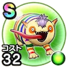

マーブルン
2章8話〜4章8話※中部・北陸限定(下位)メラミこころ最大コスト+4スキルHP回復効果+7%ターン開始時HPを7回復する全属性耐性+5% / 7.0点
くわしい特徴
【ランク特殊効果】 メラミこころ最大コスト+4スキルHP回復効果+7%ターン開始時HPを7回復する全属性耐性+5%

2章8話〜4章8話※中部・北陸限定(下位)メラミこころ最大コスト+4スキルHP回復効果+7%ターン開始時HPを7回復する全属性耐性+5% / 7.0点
【ランク特殊効果】 メラミこころ最大コスト+4スキルHP回復効果+7%ターン開始時HPを7回復する全属性耐性+5%